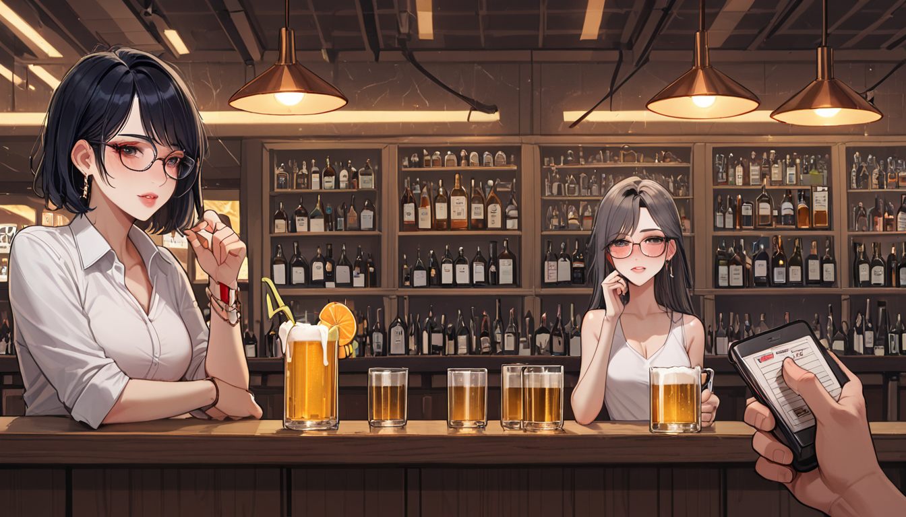

비운의 영화가 가진 디테일 하나를 제대로 읽는 게 실력이다. 비록 IMDB 점수가 높지 않지만 그 3 점대 작품 속에 숨겨진 연출적 실험은 꽤 충격적이었다. 특히 마지막 컷에서 등장하는 유니콘 꿈 장면은 단순한 장식물이 아니라 버전별 결정 요인 중 하나로 작용했다.
리들리 스콧 감독은 인터뷰 과정에서 이 시퀀스에 대한 설명을 여러 번 수정했다. 처음에는 우연의 결과라 했지만, 시간이 지나면 의도된 구성임을 인정한다. 마치 '이케부쿠로 호텔 안내'를 검색하며 입지 조건을 따지는 것과 같다. 숙소를 선택할 때 주변 환경을 고려하듯, 이 영화를 볼 때도 어떤 버전으로 접하는지가 감상의 방향성을 결정한다.
[체크리스트]
1. **연출 의도 파악**: 유니콘 꿈이 복원된 최종판을 원한다면 2007 년 리메이크를 참고하라.
2. **맥락 우선 원칙**: 감독의 초기 인터뷰보다 완성된 결과물을 더 신뢰하라.
3. **환경 고려**: 주변 설정 (배경, 음향) 과 함께 감상해야 핵심을 이해할 수 있다.
결국 어떤 선택도 정답은 아니다. 다만 그 선택이 주는 경험을 최대한 활용하느냐가 문제다. 유니콘 꿈의 존재 여부는 영화 전체의 해석을 뒤흔드는 변수로 작용한다. 이를 고려하지 않으면 단순한 영상 재생에 그칠 뿐이다.
자, 이제 버전별 차이점과 어떤 맥락에서 본다면 더 깊은 분석이 가능해짐을 알았으니 참고해라. 다음 기회에는 다른 숨은 디테일을 파헤쳐 주마.